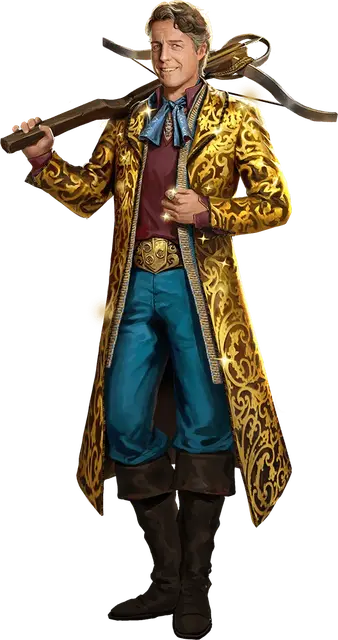

Фордж Фитцвильям
Forge Fitzwilliam
Средний Гуманоид, нейтрально-злой, именной НИП

Класс Доспеха 17 (Обезоруживающее обаяние)
Хиты 110 (20к8 + 20)
Скорость 30 футов
| мод | спас | ||
|---|---|---|---|
| СИЛ | 11 | +0 | +0 |
| ЛОВ | 14 | +2 | +5 |
| ТЕЛ | 13 | +1 | +1 |
| мод | спас | ||
|---|---|---|---|
| ИНТ | 15 | +2 | +5 |
| МДР | 17 | +3 | +3 |
| ХАР | 20 | +5 | +5 |
Навыки Акробатика +5, Ловкость рук +5, Обман +11, Расследование +8, Скрытность +8, Убеждение +11
Чувства пассивное Восприятие 13
Языки Общий, Воровской жаргон
Опасность 8 (3900 опыта)
Бонус мастерства +3
Особенности
Обезоруживающее обаяние. Пока Фордж не носит доспехов, его Класс Доспеха включает в себя его модификатор Харизмы.
Предательство. Если Фордж попадает по дружественному к нему существу броском атаки, эта атака считается критической.
Увёртливость. Если Фордж дееспособен и попадает под действие эффекта, который позволяет ему совершить спасбросок Ловкости, чтобы получить только половину урона, вместо этого он не получает вовсе никакого урона, если спасбросок был успешен, и только половину урона, если он был провален.
Действия
Мультиатака. Фордж совершает две атаки кинжалом или две атаки тяжелым арбалетом или по одной каждого вида.
Кинжал. Рукопашная или Дальнобойная атака оружием: +5 к попаданию, досягаемость 5 футов или дистанция 20/60 футов, одна цель. Попадание: 4 (1к4+2) колющего урона плюс 24 (7к6) урона ядом, и цель отравлена до конца своего следующего хода.
Тяжёлый арбалет. Дальнобойная атака оружием: +5 к попаданию, дистанция 100/400 футов, одна цель. Попадание: 7 (1к10+2) колющего урона плюс плюс 24 (7к6) урона ядом. Попадание или промах: Если цель является существом, оно совершает с помехой свой следующий бросок атаки, совершаемый до начала следующего хода Форджа.
Бонусные действия
Хитрость. Фордж совершает действие Рывок, Отход или Засада, или даёт себе преимущество на следующий бросок атаки, который совершает до конца этого хода.
Реакции
Невероятное уклонение. Фордж уменьшает вдвое урон, который он получает от атаки, попадающей по нему. Он должен видеть нападающего.
Описание
Фордж Фитцвильям — мошенник, манипулирующий другими при помощи лжи и лести. След из невыполненных обещаний и фальшивых личностей тянется за этим дерзким преступником вдоль всего Побережья Мечей. За своей обаятельной улыбкой он скрывает весьма гибкую мораль и готовый к делу кинжал.
Фордж любит всё самое лучшее, и ещё больше любит, когда это лучшее достаётся ему благодаря его собственной сообразительности. Десятилетия ограблений и афер не утолили его жажду — более того, его амбиции со временем становятся только грандиознее.